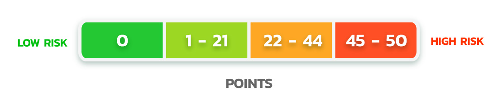

Your score is {{sumpercen}}
The risk level is {{risk}}

A score of 0 means that you have no identified risk factors or common symptoms associated with colorectal cancer. Therefore, you have almost no risk of developing colorectal cancer. It is recommended that you maintain this level of health and regularly monitor yourself. If you
notice any abnormal symptoms, it is advisable to consult a doctor.
B score of 1-21 indicates that you have some risk factors and common symptoms associated with colorectal cancer. It is recommended to consult a gastroenterologist or hepatologist for diagnosis and advice on management.
C score of 22-44 indicates that you have a high risk of colorectal cancer, with at least one risk factor (age 45 and above or family history of colorectal cancer), as well as other common symptoms associated with colorectal cancer. It is strongly recommended to consult a
gastroenterologist or hepatologist for diagnosis and advice on management.
D score of 45-50 indicates that you have both high-risk factors: being aged 45 and above, and having a family history of colorectal cancer, along with other common symptoms associated with colorectal cancer. It is strongly advised to promptly consult a gastroenterologist or
hepatologist to seek advice and guidance on colorectal cancer screening.